— ALGORITHM CONTEST / 01
第一章 算法基础
复杂度、枚举、模拟、贪心、递归与分治是地基，前缀和、差分、二分与倍增是后面每一章都会回来用的工具。
01 / SECTION
算法是什么？
- 一句话定义：算法是解决某一类问题的清晰指令序列——给定输入，在有限时间内产生确定的输出。
- 三种等价表述：
- 定义良好的计算过程，取一组值为输入、产生一组值为输出；
- 对一定规范的输入，在有限时间内获得所要求的输出；
- 解决一个问题的具体方法和步骤。
- 程序 = 算法 + 数据结构，算法决定“怎么算”，数据结构决定“数据怎么放”。
- 五大特征：
- 可行性：每一步都能分解为基本可执行操作，且能在有限时间完成。
- 确定性：每一步含义唯一、无二义（“把 x 增大”就不可执行）。
- 有穷性：必须在有限步骤后终止，且步数不能大到超出时间限制。
- 输入：0 个或多个（0 个表示初始条件已给定）。
- 输出：1 个或多个；没有输出的算法没有意义。
- 好算法的三个目标：正确性、可读性、健壮性（非法输入也要有合理反应，而不是乱输出）。
- 复杂度分级表（增长由慢到快）：
| 记号 | 含义 |
|---|---|
| O(1) | 操作数与规模无关 |
| O(log₂n) | 与规模成对数关系 |
| O(n) | 与规模成正比 |
| O(n²) / O(n³) | 平方 / 立方增长 |
| O(2ⁿ)、O(kⁿ)、O(n!) | 指数级、阶乘级，竞赛中尽量避免 |
- 同规模下取增长最慢的一档；空间复杂度一般不作首要考虑，优先优化时间。
02 / SECTION
深入分析算法的复杂度
- 定义：语句总执行次数 T(n) 是问题规模 n 的函数，若 T(n) 与 f(n) 增长率相同，记作
T(n) = O(f(n))，即渐进时间复杂度。 - 常见量级排序：
O(1) < O(log₂n) < O(n) < O(nlog₂n) < O(n²) < O(n³) < … < O(2ⁿ) < O(n!)。 - 化简三原则：
- 加法常数用 1 取代；
- 只保留最高阶项；
- 最高阶项系数去掉。
- 求复杂度的三步：
1. 找出基本语句（执行次数最多的一条，通常是最内层循环体）； 2. 只算它的执行次数数量级，忽略低次幂与系数； 3. 把数量级写进大 O。
- 并列循环用求和法则
T1+T2 = O(max(f,g))；嵌套循环用乘法法则T1×T2 = O(f×g)。 - 另两条性质：
g(n)=O(f(n)) ⇒ O(f)+O(g)=O(f)；O(C·f(n))=O(f(n))（C 为正常数）。 - 选择结构
if的时间 = 执行分支时间 + 判条件 O(1)。 - 空间复杂度 S(n)=O(f(n))，四类常见情形：
- 常量空间 O(1)：固定几个变量；
- 线性空间 O(n)：一维数组/列表，长度随 n 增长；
- 二维空间 O(nm)：二维表；
- 递归空间 O(深度)：递归即不断入栈，深度 n ⇒ O(n)。
- 结论：衡量算法优劣就是时间 + 空间两个维度，实际取舍看题目给的数据范围。
03 / SECTION
枚举算法的思想与实例讲解
- 定义：按问题性质一一列举所有可能解，逐个检验，保留合法解、丢弃非法解；列举过程不遗漏、不重复。
- 解题三步：
1. 确定枚举对象、枚举范围、判定条件； 2. 逐一枚举并验证； 3. 尽量缩小可能解范围以提高效率。
- 枚举范围是核心：范围划小了会漏解，划大了会超时。
- 例题：数组元素互不相同，求和为 0 的数对个数。
- 原始双层枚举 O(n²)：
cpp
for (int i = 0; i < n; ++i)
for (int j = 0; j < n; ++j)
if (a[i] + a[j] == 0) ++ans;- 优化一（去对称）：题目不要求有序，
(a,b)与(b,a)重复计数，令j < i，最后答案乘 2 即可。 - 优化二（桶记录）：枚举一个数后，另一个数的大小已被条件确定，只需判断它是否存在。
cpp
bool met[MAXN * 2];
for (int i = 0; i < n; ++i) {
if (met[MAXN - a[i]]) ++ans; // 之前出现过它的相反数
met[MAXN + a[i]] = true; // 下标偏移避免负数
}- 复杂度从 O(n²) 降到 O(n)，代价是多一个 O(n) 的标记数组——典型的“空间换时间”。
- 枚举在蓝桥杯等比赛中出现频率极高，属于必须练熟的基础功。
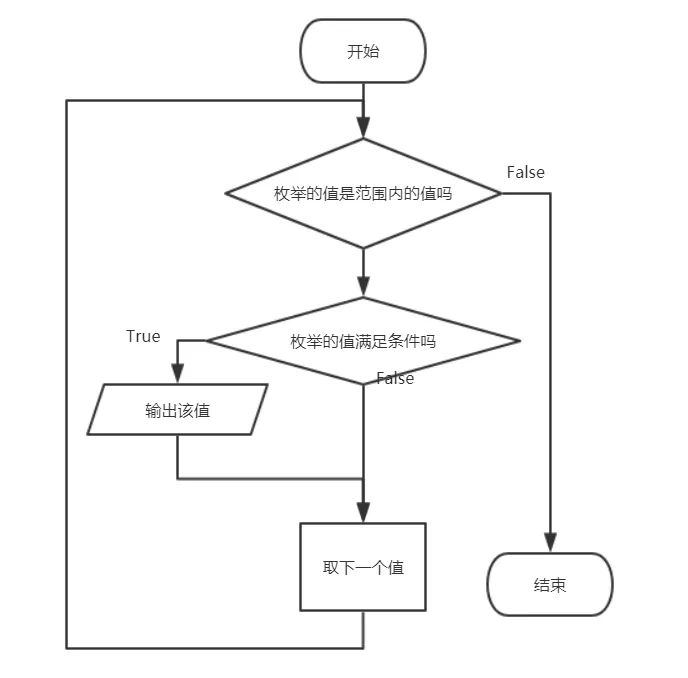
04 / SECTION
模拟算法实例讲解
- 定义：让计算机按题目描述的流程一步步执行，最终输出结果；本质是“照题意写流程”。
- 特点：码量大、操作多、思路繁复，写错很难查，考试中尤其浪费时间。
- 六条实用技巧：
- 动手前先在纸上写清流程；
- 把各步骤模块化成函数 / 结构体 / 类；
- 统一量纲（如把“YY-MM-DD 时:分”折算成秒数）避免概念混淆；
- 分块调试，哪个模块出问题单独调；
- 严格按纸上步骤写，不想到哪写到哪；
- 上述习惯对其它题型同样适用。
- 例题一：输入 A、B 输出 A+B——题目让你算，你就算，这就是最简单的模拟。
- 例题二（骑士金币）：第 1 天 1 枚；随后 2 天每天 2 枚；随后 3 天每天 3 枚……求前 k 天总额。
- 维护“当前面值 v”和“已发放天数 n”，按
1+2+3+…的块状结构累加，块内天数不足则只补剩余天数。 - 例题三（蠕虫爬井）：每次先爬 u 英寸，未出井则休息时下滑 d 英寸；求次数。
- 关键：先爬后判，出井那一次不再下滑；若把“下滑”写在判断之前就会多算一步。
cpp
int time = 0, dist = 0;
while (true) {
dist += u; time++;
if (dist >= n) break; // 出井即结束，不再下滑
dist -= d;
}05 / SECTION
贪心算法的基本思想与实例讲解
- 定义：每一步都按某种指标选取当前最优的操作，不回溯、不考虑后续影响；得到的是局部最优，不一定全局最优。
- 两个前提：问题要满足无后效性（当前决策不改变后续可选集合），且能（或经验上能）保证局部最优推出全局最优。
- 典型可保证最优的问题：最小生成树、单源最短路（Dijkstra）。
- 标准求解过程：分析业务 → 找出若干贪心策略 → 举出反例的直接淘汰 → 无（或不易）反例的要给出证明。
- 竞赛套路（不纠结证明）：
1. 先写一个不依赖贪心策略的暴力解法 X； 2. 脑补策略 A、B、C； 3. 用 X + 随机对拍检验哪个策略正确。
- 两类常见题型：
- “按某关键字排序，再按顺序选择”——离线，先处理再选；
- “每次取当前最大/最小并更新”——在线，边处理边选，常用优先队列维护。
- 后悔解法：先无条件接受，发现更优就反悔换掉（如可反悔的堆）。
- 与 DP 的区别：贪心每个子问题只做一次选择、不能回退；DP 保存历史结果，可以回头比较选择。
- 例题：
- 路灯（
X为墙、.为居民点，灯照 i-1/i/i+1）：从左到右贪心，遇到.就在i+1处放灯并跳过三格；X…X…X…X.需 5 盏。 - 金条分割（每次花费等于被切长度，求最小总代价）：等价于哈夫曼合并，用小根堆每次取两个最小相加。
- IPO（最多做 K 个项目、初始资金 M）：小根堆按花费、大根堆按利润，能做的项目不断“解锁”进利润堆。
- 会议室安排（场次最多）：按结束时间升序贪心，能接上就选——三种策略里唯一正确的是“谁先结束选谁”。
06 / SECTION
递归算法概念与实例讲解
- 概念：直接或间接调用自身来求解问题。
- 实质：把原问题分解为规模缩小、形式相同的子问题。
- 两个阶段：
- 递去：不断缩小规模，向下去；
- 归来：遇到递归出口后逐层返回，合并结果。
- 设计三要素：
1. 明确的终止条件（递归出口）； 2. 可提取的重复逻辑，能把规模缩小； 3. 出口处的处理办法。
- 递归是从上往下的思维方式，代码短但调用有开销，深度过大会爆栈。
- 经典实例：
- 阶乘：
f(n) = n * f(n-1)，出口f(0)=1； - 汉诺塔：
f(n) = 2f(n-1) + 1，出口f(1)=1； - 全排列：固定第 k 位、交换后递归 k+1，
k == m-1时输出； - 斐波那契：
f(n)=f(n-1)+f(n-2)，出口f(0)=0, f(1)=1；该写法指数级，实用时应记忆化或递推。
cpp
long long Fib(int n) {
if (n == 0) return 0;
if (n == 1) return 1;
return Fib(n - 1) + Fib(n - 2);
}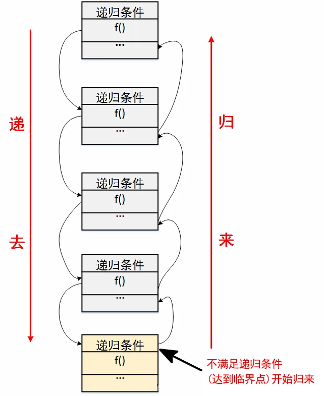
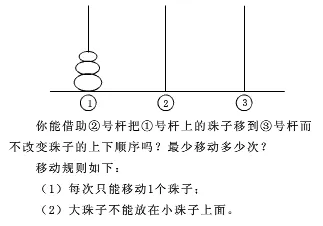
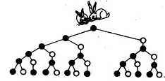
07 / SECTION
分治算法概念与实例讲解
- 定义：“分而治之”——把大问题拆成若干相互独立、形式相同的小问题，分别求解后合并。
- 是很多高效算法的基础：快速排序、归并排序、FFT、二分查找。
- 通用三步：
1. 分解：拆成规模更小的同类子问题； 2. 解决：子问题足够小就直接求解，否则继续分解； 3. 合并：把小解逐级合成为原问题的解。
- 四个适用条件：
- 子问题与原问题模式相同；
- 子问题彼此独立（这正是不用 DP 的分界：有重叠子问题就该 DP）；
- 有分解终止条件（足够小可直接解）；
- 合并代价不能太高，否则失去意义。
- 子问题独立是分治与动态规划最本质的区别。
- 汉诺塔：n 个盘从 A 经 B 到 C = 移走上面 n-1 个到 B → 移动最大盘到 C → 把 B 上 n-1 个移到 C。
cpp
void hanoi(int n, char from, char tmp, char to) {
if (n == 0) return;
hanoi(n - 1, from, to, tmp);
printf("盘子%d: %c -> %c\n", n, from, to);
hanoi(n - 1, tmp, from, to);
}- 递归树每层分两支，故移动次数
2ⁿ - 1：64 片需约 5.8×10¹¹ 秒，远超太阳系寿命。
08 / SECTION
前缀和理解与应用
- 定义：前缀和数组的第 n 项 = 原序列前 n 项之和，是“区间求和”的预处理工具；差分是它的逆运算。
- 记
s[i] = s[i-1] + a[i]（s[0]=0），则区间和sum(l,r) = s[r] - s[l-1]，单次询问 O(1)。 - 一维构造：遍历一遍累加即可，注意数组下标从 1 开始，避免
l-1越界。
cpp
for (int i = 1; i <= n; ++i) {
cin >> a[i];
s[i] = s[i - 1] + a[i];
}- 二维前缀和：
p[i][j]表示以(0,0)为左上角、(i,j)为右下角的矩形内元素和。 - 四种情况：
i==0 && j==0：直接p[0][0] = a[0][0]；- 第一行：
p[0][j] = p[0][j-1] + a[0][j]； - 第一列：
p[i][0] = p[i-1][0] + a[i][0]； - 一般位置：
p[i][j] = p[i-1][j] + p[i][j-1] - p[i-1][j-1] + a[i][j]。 - 减
p[i-1][j-1]的原因是左上那块被加了两次，也就是容斥原理。 - 子矩阵和
(x1,y1)-(x2,y2)：p[x2][y2] - p[x1-1][y2] - p[x2][y1-1] + p[x1-1][y1-1]。 - 复杂度：预处理 O(nm)，每次查询 O(1)——把“多次区间询问”从 O(n·m·q) 降到 O(nm+q)。
- 例题（区间求和）：n 个数、m 次询问
[L,R]，用sum[R]-sum[L-1]直接输出，注意开long long。
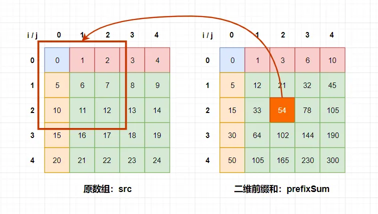
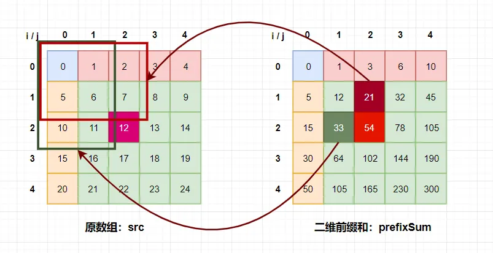
09 / SECTION
差分的理解与应用
- 定义：构造 b 使 a 是 b 的前缀和，则
b[i] = a[i] - a[i-1]；差分是前缀和的逆运算，相当于离散版的“求导/积分”。 - 核心价值：把区间整体加 c 从 O(n) 降到 O(1)，最后再前缀和还原。
- 一维区间加：
b[l] += c; b[r+1] -= c;，做完所有操作后对 b 求前缀和即得结果。 - 直觉：给
b[l]加 c 会让 l 之后全部 +c，所以在r+1处再减 c 把它们“抵消”。 - 二维差分（子矩阵加 c）四个点：
cpp
void insert(int x1, int y1, int x2, int y2, int c) {
b[x1][y1] += c;
b[x2 + 1][y1] -= c;
b[x1][y2 + 1] -= c;
b[x2 + 1][y2 + 1] += c;
}- 下标统一从 1 开始，
r+1、x2+1处要留出空位（数组多开几格）。 - 模板题流程：读入 n、m → 读序列 → m 次
l r c打差分标记 → 前缀和还原输出。 - 常见组合技：差分 + 前缀和 = “区间修改、区间查询”；树状数组/线段树可在此基础上支持在线查询。
10 / SECTION
二分查找（折半查找）实例讲解
- 定义：在有序序列中查找目标元素，每次比较中间元素并砍掉一半区间。
- 硬前提：序列必须有序（升序或降序），无序数据要先排序。
- 复杂度：最优 O(1)（一次命中）；平均与最坏 O(log n)；迭代版空间 O(1)，递归版 O(log n)。
- 流程：区间为空返回 -1 → 取中点比较 → 相等即返回 → 中点偏大去左半、偏小去右半 → 重复。
- 中点公式（防溢出）：
mid = p + (q - p) / 2，等价于⌊(p+q)/2⌋但不会在 p、q 都接近 int 上限时溢出。 - 实例：
{10,14,19,26,27,31,33,35,42,44}查 31 → 中点 27 → 右半 [5,9] → 中点 35 → 左半 [5,6] → 命中下标 5。
cpp
int binary_search(int *arr, int p, int q, int ele) {
while (p <= q) {
int mid = p + (q - p) / 2;
if (arr[mid] == ele) return mid;
if (arr[mid] < ele) p = mid + 1;
else q = mid - 1;
}
return -1;
}- 边界写法二选一，务必全程统一：闭区间
[l,r]配while(l<=r)、mid±1；或左闭右开[l,r)配while(l<r)、r=mid。 - 二分不只用于“找元素”，也用于“找第一个满足条件的位置”（
lower_bound/upper_bound）。
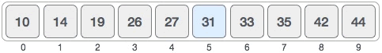
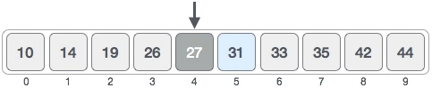
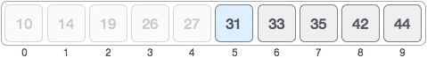
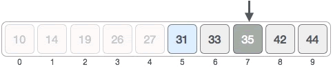
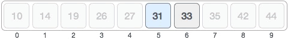
11 / SECTION
二分答案算法实例讲解
- 定义：把“求最优解”转成“判定某个值是否可行”，在答案的单调区间上二分。
- 适用前提：答案具有单调性——若
mid可行，则所有比它更“宽松”的值都可行；反之亦然。常见信号词是“最大值最小”“最小值最大”。 - 三步：确认单调性 → 二分答案 → 写
check(mid)验证可行性。 - 例题一（最大化最小间距）：n 个点选 c 个，使相邻点最小距离最大。
- 二分距离 mid，
check用贪心：从第一个点起，能放就放，计数是否 ≥ c。 - 若能放下 c 个，说明 mid 可行，可以继续放大。
- 例题二（最小化最大票数）：B 个箱子分到 n 个城市，使最大票数最小。
- 每个城市至少 1 个箱子，
check(mid)累加Σ⌈a[i]/mid⌉与 B 比较。 - 例题三（馅饼分割）：n 个馅饼分给 f+1 人（含自己），每人一整块且一样大，求最大单块面积。
- 二分半径或面积，
check统计Σ⌊V[i]/mid⌋ ≥ f+1；浮点二分注意精度。 - 浮点二分的写法：
while (r - l > eps)，l = mid而不是mid+1；eps取 1e-10 一类，循环次数也可直接固定 60~100 次。 - 五步总结：判单调 → 定区间与条件 → 判 mid → 更新区间（可行往“更优方向”收）→ 浮点控精度。
cpp
int l = 0, r = maxv, ans = -1;
while (l <= r) {
int mid = l + (r - l) / 2;
if (check(mid)) { ans = mid; l = mid + 1; } // 求最大可行值
else r = mid - 1;
}12 / SECTION
倍增算法实例讲解
- 定义：按 2 的整数次幂 成倍扩展区间/跳跃，把线性处理降到对数级；依托“任意整数可拆成若干 2 的幂之和”。
- 要求问题的状态空间可按 2 的幂划分，各段信息能合并。
- 三大典型应用：快速幂、RMQ 的 ST 表、LCA（树上倍增）。
- 序列上查找（在
{2,5,7,11,19}中找最大的小于 12 的数）： - 朴素：逐个枚举 O(n)；
- 二分：折半 O(log n)，但要求整体有序；
- 倍增：维护已确定长度
l与试探步长p，试a[l+p]是否仍满足条件，满足则l += p, p *= 2，否则p /= 2，直到 p 归零。
cpp
int l = 0, p = 1;
while (p) {
if (l + p <= n && a[l + p] < 12) l += p, p <<= 1;
else p >>= 1;
}- ST 表：
f[i][k]表示从 i 起长度2^k的区间最值，f[i][k] = max(f[i][k-1], f[i+2^(k-1)][k-1])；查询[l,r]取两段覆盖，O(1)。 - 树上倍增求 LCA：
fa[v][k]表示 v 向上 2^k 级祖先；先把深的一方跳到同深度，再一起从大到小往上跳，直到二者父节点相同。 - 预处理 O(n log n)，单次查询 O(log n)。
13 / SECTION
结合实例浅析构造题型
- 定义：不要求输出某个计算值，而是给出一组合法方案，满足题目的限制条件。
- 两大特点：
- 高自由度：答案往往有很多组，通常存在一种简单构造；反过来说，自由度太高也容易无从下手；
- 形式灵活：没有通用套路，很难提炼共性解法。
- 常用手段：二分、分治、排序、图论（网络流、2-SAT、最短路），以及数学推导直接给出公式。
- 思考顺序：先看小情况，再从 n 推到 n+1 找规律；必要时自己加限制把问题化窄。
- 例题一：构造三个数使某关系成立——
n, n+1, n(n+1)即为一组解；n=1时无解（此时后两项相等），特判输出 -1。
cpp
if (n == 1) printf("-1\n");
else printf("%d %d %d\n", n, n + 1, n * (n + 1));- 例题二（回忆 01 背包样例）：n、v、w、P、k 全都要自己造。
- 关键观察：模数 P 是假的——方案数只要不超过 P，取模就不起作用，于是可以自由拼数据。
- 做法：用 DP 预处理“用前 i 个物品凑出体积 j 的方案数”，倒推出体积序列。
- 构造题的经验来源是“多看题 + 多记经典构造”，考场上常靠小数据试错。
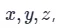
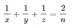
14 / SECTION
用C语言解答汉诺塔问题
- 规则：三根柱 A（起始）、B（中转）、C（目标），大盘不能压小盘，每次只能移一个盘。
- 3 个盘的 7 步过程：1→C、2→B、1→B、3→C、1→A、2→C、1→C；可以看出 B 始终是“暂存区”。
- 递归拆解（n 个盘）：
1. 把上面 n-1 个盘从 A 经 C 移到 B； 2. 把第 n 个（最大）盘从 A 移到 C； 3. 把 B 上 n-1 个盘经 A 移到 C。
- 移动次数：
f(1)=1, f(2)=3, f(3)=7 ⇒ f(n)=2f(n-1)+1 = 2ⁿ-1。
cpp
void hanoi(int n, char from, char mid, char to) {
if (n == 1) { printf("盘子%d: %c -> %c\n", n, from, to); return; }
hanoi(n - 1, from, to, mid);
printf("盘子%d: %c -> %c\n", n, from, to);
hanoi(n - 1, mid, from, to);
}- 输出即完整操作序列；这题是理解“递归出口 + 子问题同构”的最小范例。
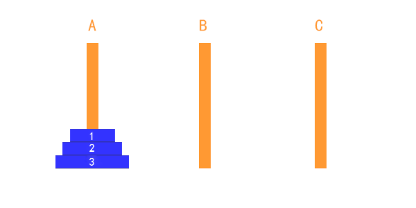
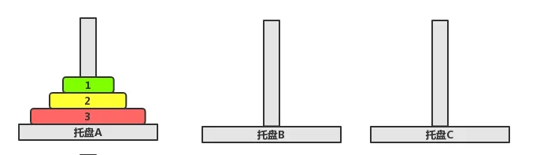
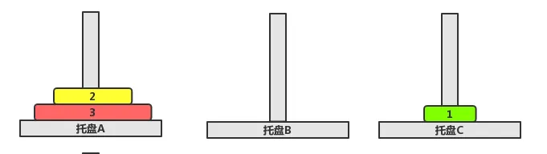
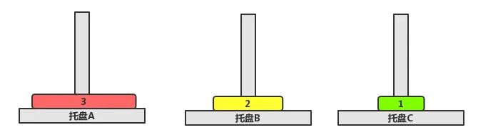
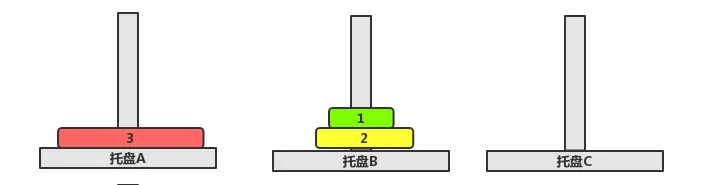
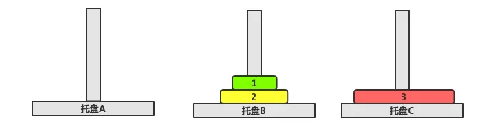
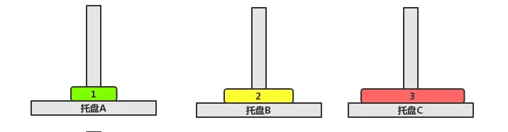
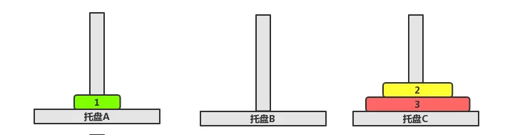
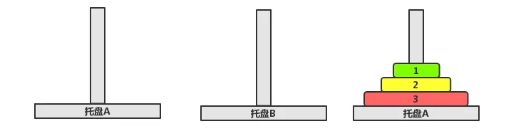
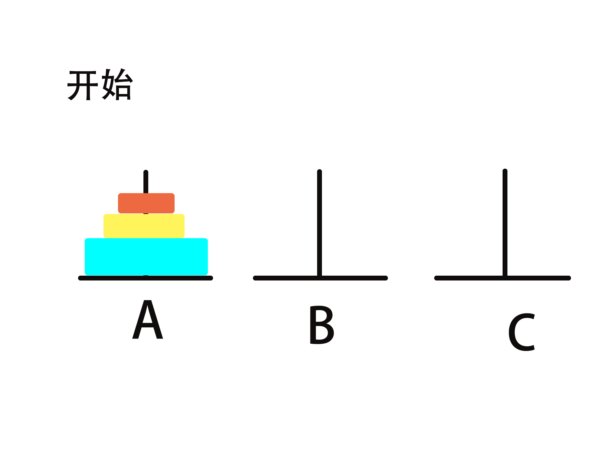